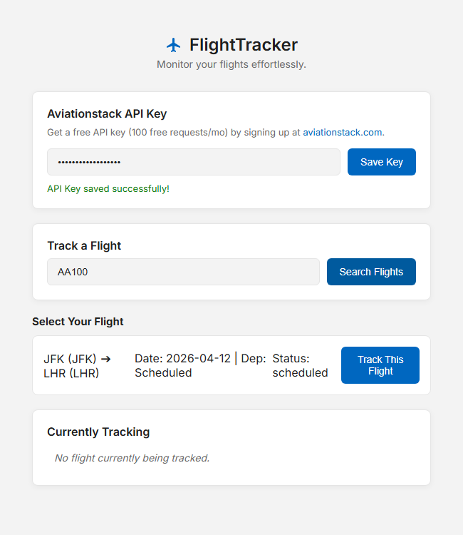
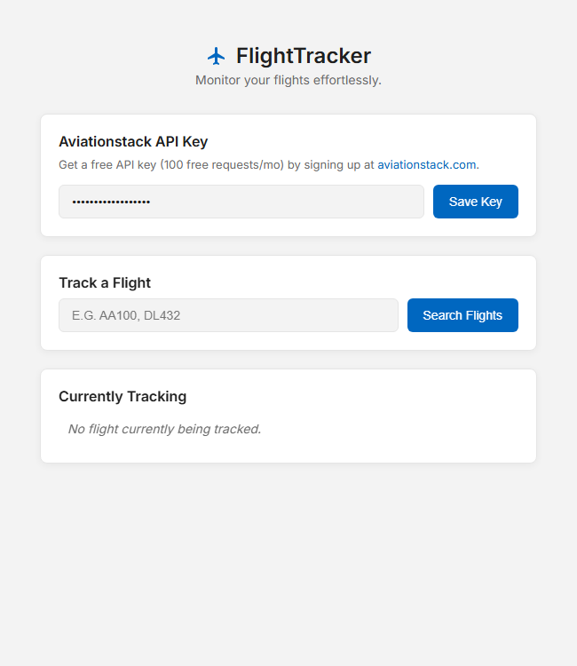

FlightTracker Workspace
A sophisticated desktop interface for real-time flight monitoring, allowing direct tracking of live aviation operations and historical results via configurable APIs.


Live Monitoring
Observe flights in real-time as they cross global airspace. Integrated with precise aviation APIs to pull live geospatial positioning and trajectory details.
Advanced Results View
Filter and ingest mass flight schedules or search results. The dynamic data dashboard supports high-visibility viewing and organized tracking points.
Custom API Integrations
Plug into standard aviation feeds securely by entering private API keys into the dedicated options menu. No hardcoded limitations.